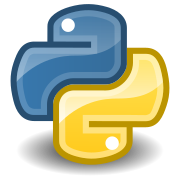

Programeerimiskeeled nahu näitkes Nodes.js, Jaba, PHP jne
Keskenduvad teostusele, kus mudelist saab tegelik tarkvaratoode. Toetavad andmebaasi struktuuri genereerimisele, koodi genereerimisele, testide läbiviimisele, koodi versioonihaldust, konfiguratsioonihaldust, pöördprojekteerimist (reverse engineering) ja muud sellis
Javat pisut kasutanud ja uurinud
Ei ole kasutanud Phython, Node.js, PHP
Phython

Mitut programmeerimisstiili, näiteks objektorienteeritud, protseduraalset või funktsionaalset programmeerimist.